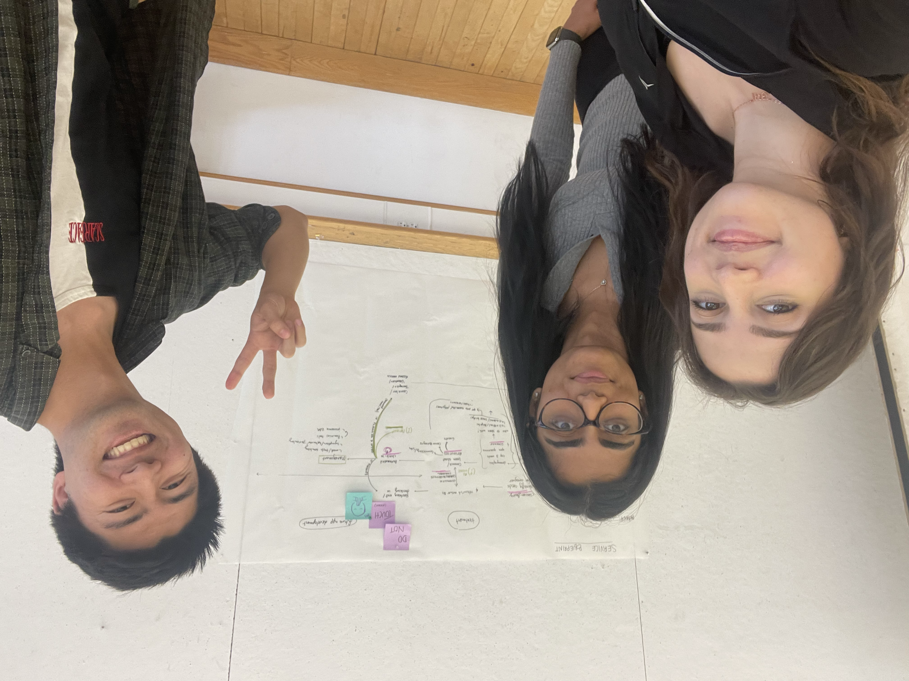
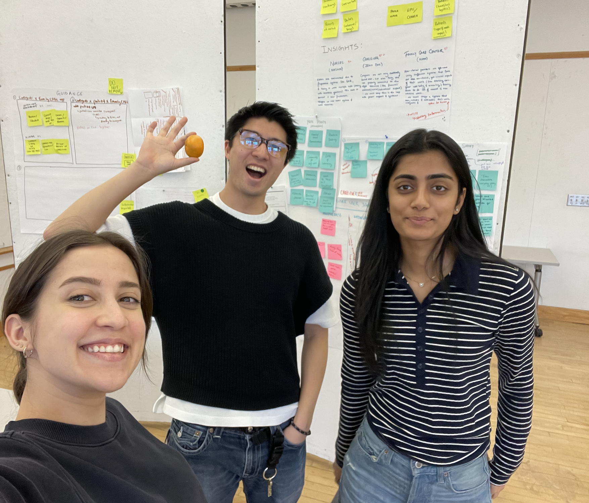
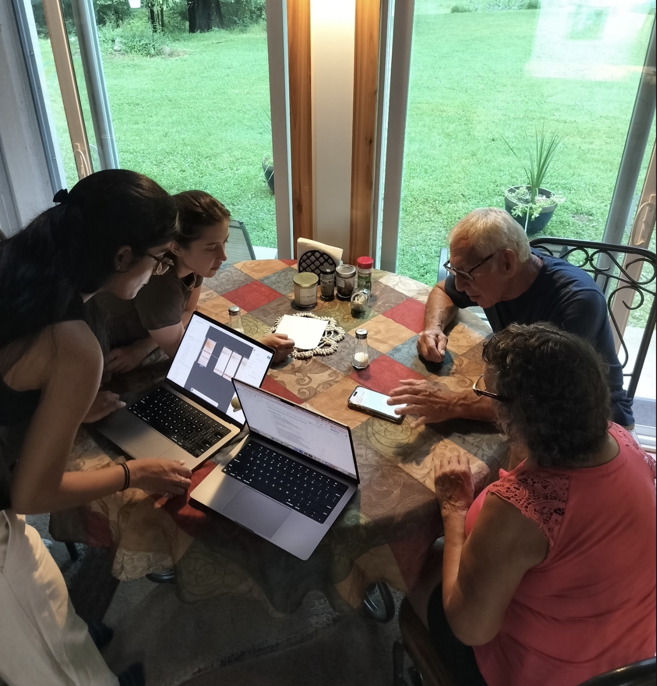

Designing w/CARE
A design project focused on supporting caregivers of gynaecological oncology patients and care teams at UPMC Magee-Womens Hospital.
From Prototype to Funded Build: Care2Care
Building Care2Care
Care2Care won the Lucie Young Kelly Faculty Leadership Award, under the mentorship of Heidi Ann Scharf Donovan, a UPMC nurse and University of Pittsburgh research professor. That funding is what's moving the project from academic prototype to a real product in active development.

Executive Summary
- Partnered with CancerBridges, the Family CARE Center at UPMC, University of Pittsburgh and CMU to design Care2Care, a caregiver support app delivered as a final prototype in 3 months
- Focused on a population overlooked by existing healthcare tools: caregivers of gynaecological oncology patients navigating emotionally heavy, information-dense care journeys
- The Family CARE Center is now supporting development of the full app, validating the direction beyond the academic context
- Awarded the Lucie Young Kelly Faculty Leadership Award, securing the funding now moving Care2Care from prototype to a real, built product
Context
Oncology care journeys are emotionally heavy, information-dense, and often fragmented. This project looked at how thoughtful experience design can reduce friction, build trust, and make the care pathway easier to understand for patients and caregivers.

Challenge
- How might we help caregivers of patients feel informed and in-control during high-stress moments?
- How might we reduce communication gaps between caregivers and clinical teams?
- How might we design support that is practical, compassionate, and feasible for staff?
Early synthesis showed that caregivers were often overwhelmed by terminology and timing, while staff were constrained by workload and fragmented communication channels. The core opportunity was to design around moments of uncertainty, not only around hospital touchpoints.

Approach
- Mapped end-to-end patient journeys to identify stress peaks and decision bottlenecks.
- Conducted stakeholder interviews to align patient needs with operational realities.
- Developed and tested experience concepts focused on guidance, reassurance, and continuity.
The design direction centred on plain-language communication, pre-visit orientation support, and clear handoff moments between teams. Instead of a single artefact, the outcome was a cohesive set of service-level recommendations that could scale across related care pathways.

Related Writing
This project is documented through a multi-author research and design writing series. These articles capture how we framed the problem space, mapped current systems, and developed direction for stronger care coordination across transitions!
- Research Objectives for Cancer Care Coordination · 4 min read
- Mapping the Cancer Care Terrain · 4 min read
- Redesigning Care Coordination Across Transitions · 4 min read
- A.E.I.O.U in Action at UPMC Magee · 4 min read
- The Big Idea: Designing a System that Cares for the Caregiver · 5 min read
- Three Concepts, One Direction · 4 min read
- From Direction to Discovery: Listening Before We Build · 6 min read
- What We Heard, What We Missed, and What Comes Next · 5 min read
- Building Together: A Team Reflection · 3 min read
- Designing for the Invisible Details of Caregiving · 4 min read
Outcomes
- Bridged the gap between caregivers of oncology patients and the support resources meant for them.
- Delivered a more empathetic, effective care coordination concept, now advancing into real development with the Family CARE Center.
- Produced design artifacts, personas, journey maps, and service concepts, that reflect caregivers' actual, identified needs.
- Proved a service-design approach for high-stakes healthcare contexts sound enough to secure funding and continue past the capstone.

The capstone presentation to program faculty and UPMC partners, including Professor Kristin Hughes, Grace Campbell PhD RN, and Dr. Sarah Taylor, closed out the academic phase successfully. Work now continues on two fronts: usability and pilot testing with real caregivers and liaisons, and standing up the backend architecture, pending IRB approval.

